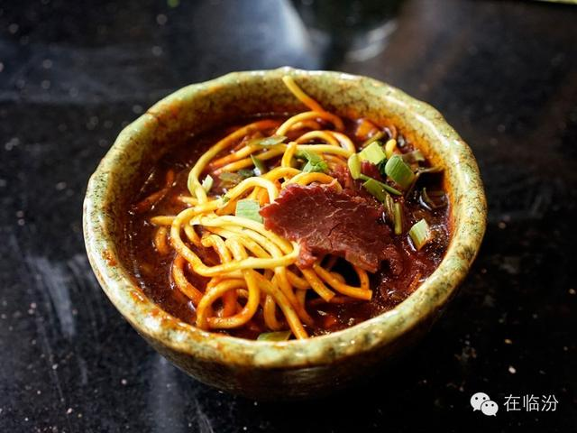

2017-5-15
Top1 牛肉丸子面
临汾市小吃牛肉丸子面用一个字概括--"爽"，用两个字概括是"香辣"。在山西省临汾市区的大街小巷，牛肉丸子面开一家火一家，门面都不大，属于平价小吃。最正宗的要数白家牛肉丸子面，有牛肉的鲜、有丸子的香，还有秘制的汤，很辣很爽，吃起来大汗淋漓，尽管如此夏天吃的人也有很多。满满一大碗面条上漂着红红的辣椒油，充满食欲感、溜圆的牛肉丸子伴着碧绿的香菜，纯朴简单的美味令人酣畅淋漓。

由来
牛肉丸子面始创于20世纪70年代，由临汾回民白荣祥先生首创，丸子面由地道的牛肉，回民风味的特制丸子以及特制面条为剂，混和特有的香料，和中草药，在配以独特秘制的牛大骨熬成的高汤，口味独特，香醇，在当地很受欢迎。
特色
在临汾就不能不说牛肉丸子面。在临汾的大街小巷，最多的就是牛肉丸子面了，门面都不大，属于平价小吃。很多临汾人从外地回来，第一时间就来吃牛肉丸子面，味道很棒，适合喜欢吃辣的人。
看上去它的做法很简单，面条好像是提前蒸好的，在大厅的最深处有一口大锅，里面是用大量的辣椒，配合牛骨等煮的老汤，使得老汤浓厚香醇，同时老汤也成为了牛肉丸子面的最大卖点。 汤里还炖着丸子，可以看到上面厚厚的一层辣椒油，吃的时候用滚烫的汤一次一次的把面条浇透浇热盛上丸子，再放几片牛肉和星点香菜就可以了。
很辣很爽，辣中又透着麻麻的感觉，总是令人神往，大家都吃的大汗淋漓的，尽管如此夏天吃的人也不少哦。用临汾人的话说就是"咥(音同碟)一大碗牛肉丸子面"。
Welcome To Linfen
店铺推荐